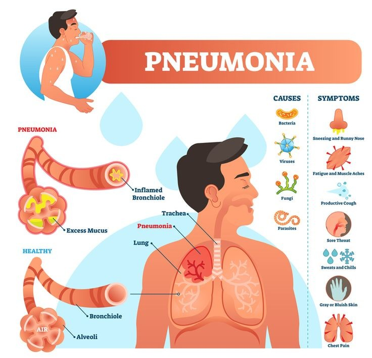

Pneumonia
Pneumonia adalah kondisi inflamasi yang terjadi saat seseorang mengalami infeksi pada kantung-kantung udara dalam paru-paru. Kantung udara yang terinfeksi tersebut akan terisi oleh cairan maupun pus (dahak purulen). Gangguan ini dapat menyebabkan batuk berdahak atau bernanah, demam, menggigil, hingga kesulitan bernapas.